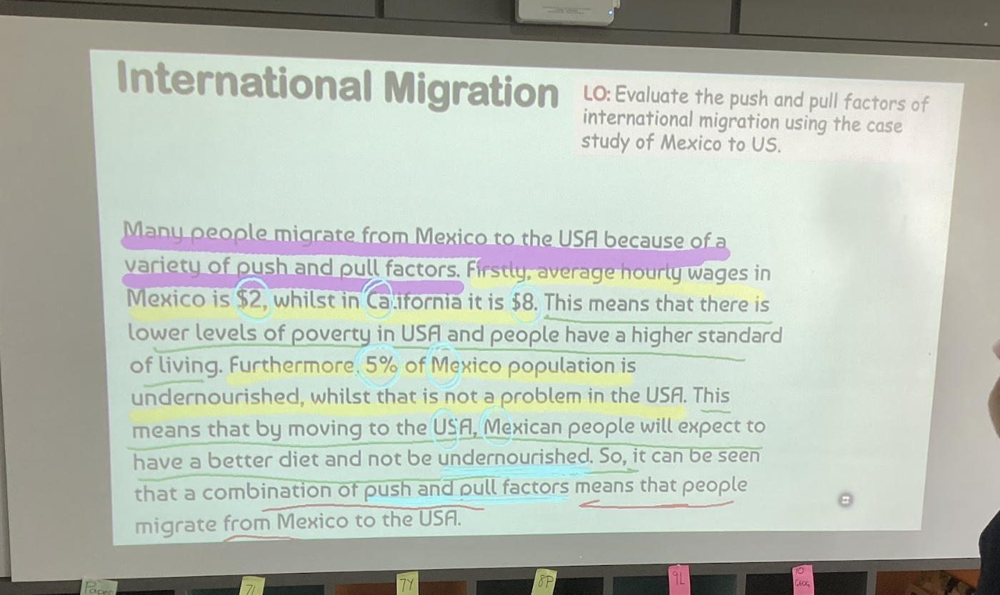
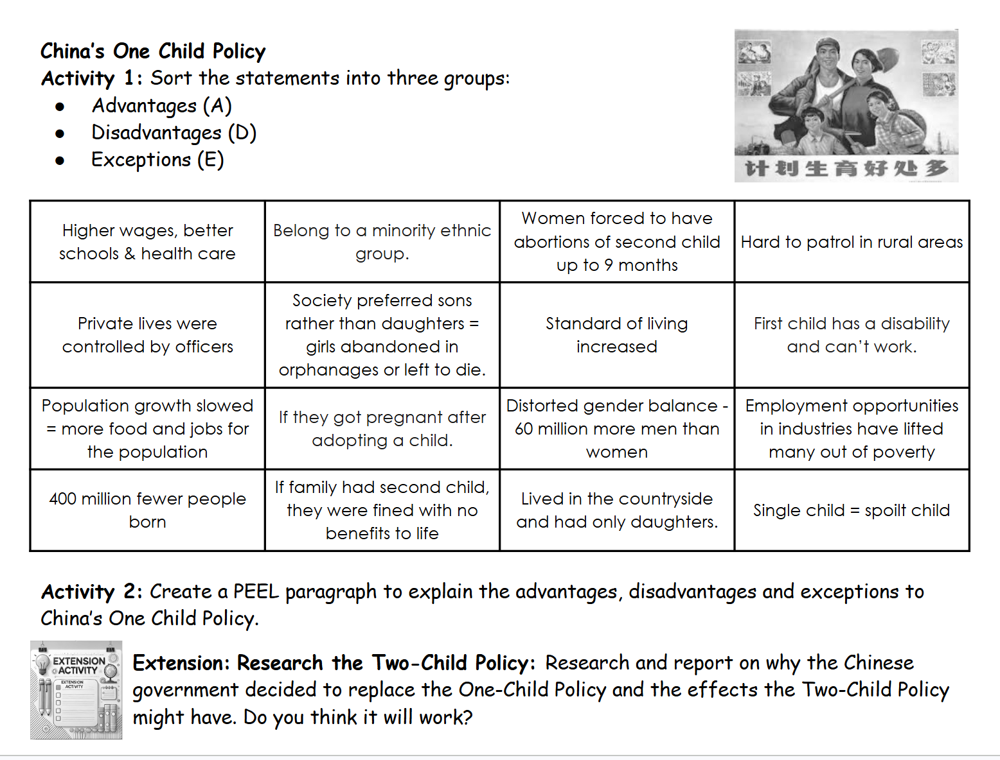

'Population: Why do people migrate? Where do people migrate to? China's One Child Policy. Over-population and over-consumption.'
'인구: 왜 이주하는가? 어디로? 중국 한 자녀 정책. 과인구·과소비.'
'50-question multiple-choice quiz covering all four lessons (6, 7, 9, 10).'
'4개 lesson(6, 7, 9, 10) 전체를 다루는 객관식 50문제'.
Enrique Canchola is a 42-year-old Mexican from Zacatecas. Zacatecas is 2,400 metres above sea level, 450 miles from the US border. Few rivers → water supply problems for agriculture.
Enrique Canchola — 42세 멕시코인, 사카테카스 출신. 사카테카스는 해발 2400m, 미국 국경에서 450마일. 강이 적어 농업용수 부족.
'Unemployment is rising in Zacatecas. Mining is no longer as profitable.' '5% of Mexico's population are undernourished. This isn't a problem in the US.'
'사카테카스 실업률 상승, 광업은 더 이상 수익성 없음.' '멕시코 인구의 5%가 영양 부족, 미국은 아님.'
• Low wages — 'average hourly wage in Mexico is $2'.
• 낮은 임금 — '멕시코 평균 시급 $2'.
• Limited water access — '88% have access to safe drinking water' (vs 100% in US).
• 제한된 식수 접근 — '88%만 안전한 식수' (미국은 100%).
• Rising unemployment, declining mining industry.
• 실업률 상승, 광업 쇠퇴.
• Undernourishment (5% of population).
• 영양부족 (인구의 5%).
• Higher wages — 'average wage in California is $8 per hour' (4× Mexico).
• 높은 임금 — '캘리포니아 시급 $8' (멕시코의 4배).
• Better access to affordable healthcare.
• 더 나은 의료 접근성.
• US government spends more on education and healthcare.
• 미국 정부는 교육·의료에 더 많이 지출.
• Hope to send money back home (remittances). Enrique has a wife and 2 young daughters who are often ill.
• 고향에 송금 희망 (Enrique는 아내·자주 아픈 어린 두 딸이 있음).
'Last time, Enrique tried to swim across the polluted Rio Grande at night with ten other people, but he was caught and sent back.'
'지난번에는 다른 10명과 밤에 오염된 리오 그란데를 헤엄쳐 건너려 했으나 잡혀 송환됨.'
'His plan was potentially deadly. He sliced off the top of the leather seat and wriggled inside the cushion. His friend drove the car. The guards at the San Ysidoro crossing saw his legs sticking out.'
'위험한 계획: 가죽 시트 윗부분을 잘라 쿠션 속으로 비집고 들어감. 친구가 차 운전. San Ysidoro 검문소에서 다리가 삐져나와 발각.'
'It was really hot and he risked suffocation.'
'매우 더웠고 질식 위험까지 있었음.'

Marek and Anna, both 26 years old, a couple from Poland. Marek is an electrician, Anna a secretary. English isn't very strong but hopeful about finding jobs.
Marek와 Anna, 둘 다 26세, 폴란드 커플. Marek는 전기공, Anna는 비서. 영어 약하지만 일자리 희망.
Have a tourist visa for 90 days. Want to find work and stay longer. Have Polish friends already in Malaysia. Plan to maybe live permanently and start a family.
관광 비자 90일. 일자리 찾고 더 머물기 희망. 말레이시아에 폴란드인 친구 이미 있음. 영구 거주·가족 시작도 고려.
Nayeem and Ushma, family from Afghanistan seeking asylum with 3 children (10, 5, 3). Nayeem a doctor, Ushma a trained nurse.
Nayeem와 Ushma, 아프가니스탄에서 망명 신청, 자녀 3명(10·5·3세). Nayeem은 의사, Ushma는 훈련된 간호사.
Fled because of 'instability and the repressive rule of the Taliban'. Daughters denied education. Nayeem's hospital was attacked. Now in temporary budget hotel, rebuilding life from scratch.
'불안정과 탈레반의 억압적 통치' 때문에 탈출. 딸들 교육 박탈. Nayeem 병원 공격당함. 현재 임시 저가 호텔, 처음부터 다시 시작.
Mustafa and Modqtar, both 15 years old, from Somalia, arrived without families. Brought illegally by people-smuggling gang. Families paid for safer life and education.
Mustafa와 Modqtar, 둘 다 15세, 소말리아 출신, 가족 없이 도착. 인신매매 갱이 불법으로 데려옴. 가족이 더 안전한 삶·교육 위해 비용 지불.
Somalia has had civil war for years. They wash dishes at a food court for food, clothes, rent. Speak English, hope to attend school. Don't want to return.
소말리아는 오랜 내전. 음식·옷·월세 위해 푸드코트 설거지. 영어 가능, 학교 가기 희망. 귀국 원치 않음.
Claudine, 28-year-old university graduate from France, works as a computer programmer in Kuala Lumpur. Decided to live in Malaysia permanently.
Claudine, 28세 프랑스 대학 졸업자, 쿠알라룸푸르에서 컴퓨터 프로그래머. 영구 거주 결정.
Works for a global company hiring people worldwide. Studied Mandarin at university but English is not strong.
전 세계 직원을 채용하는 글로벌 회사에서 근무. 대학에서 중국어 전공했지만 영어 약함.
The lesson asks students to decide and justify who Malaysia should allow in. Consider: skills, need (asylum), legal status, contribution to society.
이 수업은 학생들에게 말레이시아가 누구를 받아야 할지 결정·정당화하라고 요구. 고려 사항: 기술, 필요(망명), 법적 지위, 사회 기여.
Before the policy, the typical Chinese family had 6 children (Lesson 9 video quiz Q2 answer).
정책 이전 전형적인 중국 가정은 자녀 6명 (Lesson 9 비디오 퀴즈 Q2 정답).
The Chinese government worried that the country's huge population would cause poverty and resource shortages, so it introduced the One Child Policy.
중국 정부는 거대 인구가 빈곤·자원 부족을 일으킬 것을 우려해 한 자녀 정책 도입.
From the lesson worksheet (Lesson 9-2.png), 12 statements to sort into A (Advantage) / D (Disadvantage) / E (Exception):
워크시트(Lesson 9-2.png)의 12 진술을 A(장점)/D(단점)/E(예외)로 분류:
• Higher wages, better schools & health care
• Belong to a minority ethnic group
• Women forced to have abortions of children up to 9 months
• Hard to patrol in rural areas
• Private lives were controlled by officers
• Society preferred sons rather than daughters → girls abandoned in orphanages or left to die
• Standard of living increased
• First child has a disability and can't work
• Population growth slowed → more food and jobs
• If you get pregnant after adopting a child
• Distorted gender balance — 60 million more men than women
• Employment opportunities in industries have lifted many out of poverty
• 400 million fewer people born
• If family had second child, they were fined with no benefits to be born
• Lived in the countryside and had only daughters
• Single child = spoilt child
(이 12개 진술을 장점/단점/예외로 분류하는 활동)

Key answers from the video quiz:
비디오 퀴즈의 정답:
Q1. China's large population has 'created a large workforce contributing to economic growth'.
Q1. 중국의 거대 인구는 '경제 성장에 기여하는 큰 노동력 형성'.
Q3. Unintended consequence: 'a shrinking workforce' (fewer young people).
Q3. 의도하지 않은 결과: '노동력 축소' (젊은 인구 감소).
Q4. The literacy rate of women in China is higher than in India.
Q4. 중국 여성 문해율은 인도보다 높음.
Q5. 21st century approach: 'Encouraging larger families' (policy ended 2015 → two-child → three-child).
Q5. 21세기 접근: '더 큰 가족 장려' (2015년 정책 종료 → 두 자녀 → 세 자녀).
Task from Lesson 9-2: 'Create a PEEL paragraph to explain the advantages, disadvantages and exceptions to China's One Child Policy.'
Lesson 9-2 과제: '한 자녀 정책의 장점·단점·예외를 설명하는 PEEL 단락 작성.'
Extension: Research the Two-Child Policy — why did the Chinese government replace the One-Child Policy? What might be the effects?
심화: 두 자녀 정책 조사 — 왜 중국 정부가 한 자녀 정책을 대체했나? 효과는?
'People have different opinions about overpopulation and overconsumption.'
'사람들은 과인구·과소비에 대해 다른 의견을 가짐.'
'Some believe there are too many people on Earth, which leads to problems like pollution and not enough resources.'
'일부는 지구에 사람이 너무 많다고 생각하며 그것이 오염·자원 부족 같은 문제를 일으킨다고 본다.'
'Others think that the way we use resources is more important than the number of people. They argue that if we use resources wisely, we can support everyone.'
'다른 사람들은 사람 수보다 자원 사용 방식이 더 중요하다고 생각한다. 자원을 현명하게 쓰면 모두를 지원할 수 있다고 주장.'
'Overpopulation means more people than the Earth can support. This can lead to:'
'과인구는 지구가 지탱할 수 있는 것보다 많은 사람을 의미. 결과:'
• Less food: Not enough to feed everyone.
• 음식 부족: 모두 먹일 수 없음.
• More waste: Too much rubbish that can harm nature.
• 쓰레기 증가: 자연을 해치는 너무 많은 쓰레기.
• Less space: Overcrowding in cities.
• 공간 부족: 도시 과밀.
'Overconsumption is when we use too many resources, like water and energy. It can lead to:'
'과소비는 자원(물·에너지 등)을 너무 많이 사용하는 것. 결과:'
• Climate change: This makes the weather worse.
• 기후 변화: 날씨가 더 나빠짐.
• Loss of nature: Habitats and species are disappearing.
• 자연 손실: 서식지와 종이 사라짐.
'There are things we can do to help:'
'우리가 할 수 있는 것:'
• Reduce, Reuse, Recycle: Cut down on waste and use things again.
• 줄이고, 다시 쓰고, 재활용: 쓰레기를 줄이고 재사용.
• Save Energy: Turn off lights and unplug devices when not in use.
• 에너지 절약: 안 쓸 때 전등 끄고 플러그 뽑기.
• Use Less Water: Take shorter showers and fix leaks.
• 물 절약: 짧은 샤워, 누수 수리.
• Educate Others: Talk to friends and family about these issues.
• 다른 사람 교육: 친구·가족과 이 문제에 대해 이야기.
'Even though there are different views, many people agree on some points. For instance, they all want to make the world a better place. Some solutions include using resources better and protecting the environment. Compromises may happen when groups work together to find ways to help both people and the planet.'
'다른 의견이 있어도 많은 사람이 일부 점에 동의. 모두 더 나은 세상을 원함. 해결책: 자원을 더 잘 쓰고 환경 보호. 타협은 집단이 협력해 사람과 지구를 둘 다 도울 방법을 찾을 때 일어남.'
Push factors (from Mexico):
밀어내는 요인 (멕시코에서):
1. Very low wages — only $2 per hour in Mexico.
1. 매우 낮은 임금 — 멕시코 시급 $2.
2. Rising unemployment in Zacatecas + 5% of Mexico's population is undernourished.
2. 사카테카스 실업률 상승 + 멕시코 인구 5% 영양 부족.
Pull factors (to USA):
끌어당기는 요인 (미국으로):
1. Higher wages — $8 per hour in California (4× more).
1. 높은 임금 — 캘리포니아 시급 $8 (4배).
2. Better access to healthcare and education (US government spends more) and ability to send remittances home.
2. 의료·교육 접근성 좋음 (미국 정부 지출 더 많음) + 고향에 송금 가능.
P: Malaysia should prioritise allowing in Nayeem and Ushma (the Afghan asylum-seeking family) and Claudine (the French skilled worker).
P: 말레이시아는 Nayeem과 Ushma(아프간 망명 가족)와 Claudine(프랑스 기술 인력)을 우선 받아야 합니다.
E: Nayeem and Ushma are a doctor and a trained nurse fleeing the Taliban; their children are at risk of losing education. Claudine is a computer programmer working for a global company in Kuala Lumpur.
E: Nayeem은 의사, Ushma는 훈련된 간호사, 탈레반을 피해 망명; 자녀들이 교육 박탈 위기. Claudine은 쿠알라룸푸르의 글로벌 회사에서 일하는 컴퓨터 프로그래머.
E (explain): The Afghan family needs protection (asylum is a human right) and their medical skills would benefit Malaysia's healthcare system. Claudine brings economic value and contributes to Malaysia's modern, international workforce.
E (설명): 아프간 가족은 보호가 필요 (망명은 인권), 의료 기술은 말레이시아 의료에 도움. Claudine은 경제적 가치와 국제적 노동력에 기여.
L: This balances both humanitarian need and economic benefit — two strong reasons why Malaysia should welcome them.
L: 이는 인도적 필요와 경제적 이익의 균형 — 말레이시아가 받아들여야 할 두 가지 강력한 이유.
Advantages (A):
장점 (A):
1. Population growth slowed → 'more food and jobs for the population'. About 400 million fewer people were born.
1. 인구 증가 둔화 → '인구를 위한 더 많은 음식과 일자리'. 약 4억 명 덜 태어남.
2. 'Higher wages, better schools and health care' as resources spread across fewer people.
2. 적은 인구에 자원이 분배되어 '더 높은 임금, 더 나은 학교와 의료'.
Disadvantages (D):
단점 (D):
1. 'Distorted gender balance' — about 60 million more men than women in China.
1. '왜곡된 성비' — 중국에 남성이 여성보다 약 6000만 명 더 많음.
2. 'Women forced to have abortions of children up to 9 months' / 'Private lives were controlled by officers' — serious human rights issues.
2. '임신 9개월까지의 강제 낙태' / '공무원에 의한 사생활 통제' — 심각한 인권 문제.
Overpopulation means 'more people than the Earth can support'. Effects include less food, more waste, and overcrowding in cities.
과인구는 '지구가 지탱할 수 있는 것보다 많은 사람'을 의미. 결과: 음식 부족, 쓰레기 증가, 도시 과밀.
Overconsumption means 'using too many resources' (water, energy). Effects include climate change and loss of nature (habitats and species disappearing).
과소비는 '너무 많은 자원 사용' (물·에너지). 결과: 기후 변화와 자연 손실 (서식지·종 소실).
The key difference: overpopulation focuses on the NUMBER of people, while overconsumption focuses on HOW MUCH each person uses. A rich country with fewer people can still cause more environmental damage than a poor country with more people, because of overconsumption.
핵심 차이: 과인구는 사람의 수에 초점, 과소비는 각 사람이 얼마나 쓰는지에 초점. 적은 인구의 부유한 나라가 많은 인구의 가난한 나라보다 더 큰 환경 피해를 일으킬 수 있음 (과소비 때문).
Answer: (c) A shrinking workforce.
정답: (c) 노동력 축소.
Explanation: Decades of one-child families means there are now fewer young adults entering work, while the elderly population grows. This is the opposite of what the policy intended (which was to manage population).
설명: 수십 년간 한 자녀 가정으로 지금 일터에 들어오는 젊은이가 줄고 노인 인구는 증가. 정책 의도(인구 관리)와 반대.
From Lesson 10 'What We Can Do':
Lesson 10의 '우리가 할 수 있는 것':
1. Reduce, Reuse, Recycle — cut down on waste and use things again.
1. 줄이고·재사용·재활용 — 쓰레기를 줄이고 재사용.
2. Save Energy — turn off lights and unplug devices when not in use.
2. 에너지 절약 — 사용하지 않을 때 전등 끄고 플러그 뽑기.
3. Use Less Water — take shorter showers and fix leaks.
3. 물 적게 쓰기 — 짧은 샤워와 누수 수리.
4. Educate Others — talk to friends and family about these issues so more people act.
4. 다른 사람 교육 — 친구·가족과 이 문제에 대해 이야기.